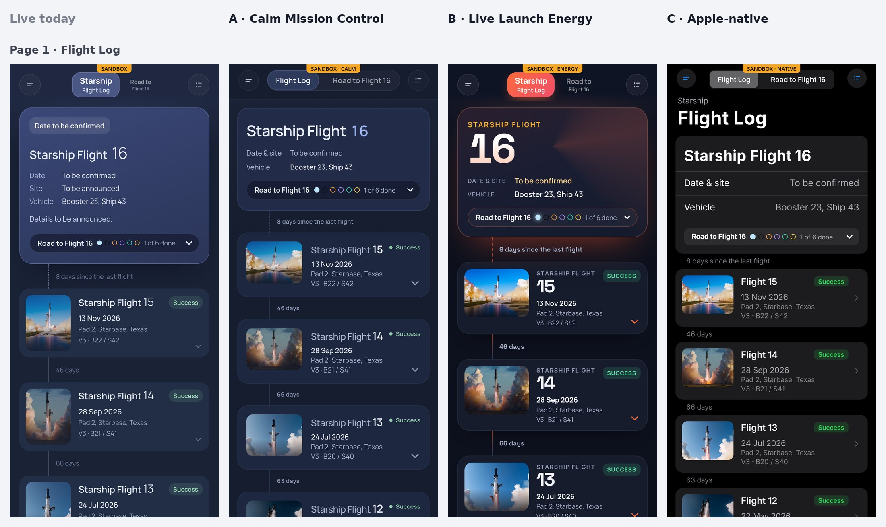
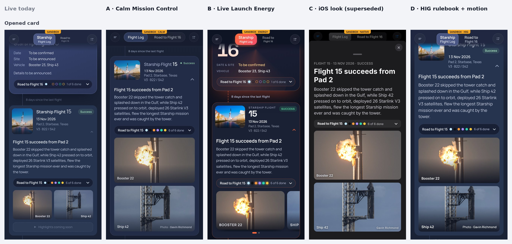
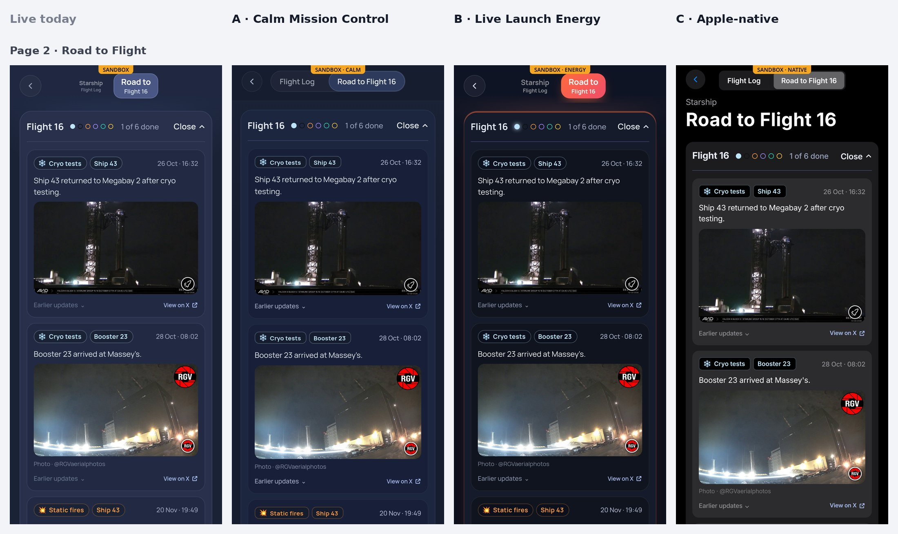
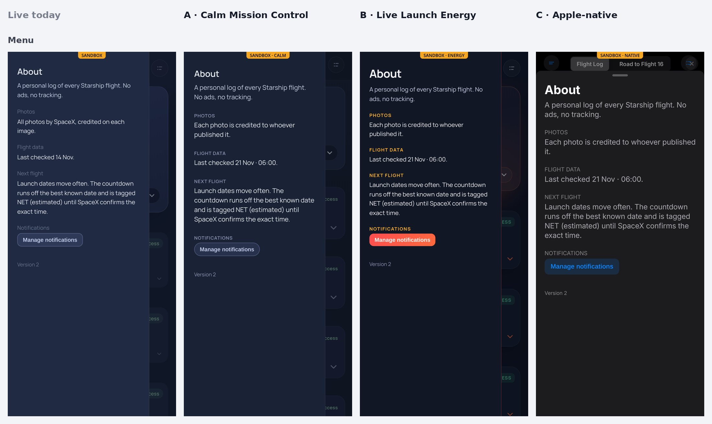
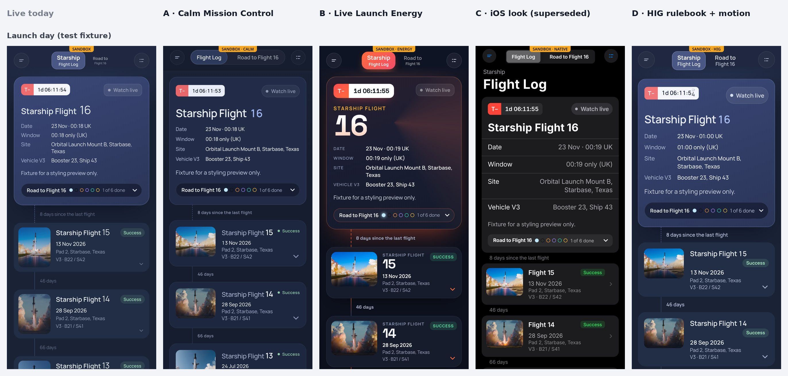

Four feel directions
Same data, same structure (Page 1 Flight Log · Page 2 Road to Flight). Only the feel changes. Sandbox copies: push, Firebase and the service worker are off. Not tested on a real iPhone yet.
DaVinci's pick · most polishedA · Calm Mission ControlMatte and quiet: one type scale, equal-weight nav, flat cards, 240 ms fades. The launch-day red countdown and Watch-live pulse are borrowed from B.
Open the app → Latest · EnergyB · Energy (latest)The current Energy prototype (v7). This is the stable link to test. Versioned folders below are kept as history.
Open the app → Superseded by DC · iOS look (superseded)Copies the iOS look (pure black, large titles, segmented control), not the rulebook. Kept for comparison. Feels like an iOS app: large titles that collapse, a segmented control, push-style page change, cards open as sheets you drag down to close.
Open the app → Energy v7B7 · Energy v7Energy v6 plus dots that pop when you close Road to Flight, text-only Road sections on past flights, the Flight 15 carousel on every gallery, no Page 2 header button, and a navy overscroll.
Open the app → Energy v6B6 · Energy v6Energy v5 plus the radar tucked behind an opaque Road to Flight pill, a softer smoother glow on the milestone cards, captions off the photo carousel (tiny faint source only), and a calmer swipe.
Open the app → Energy v5B5 · Energy v5Energy v4 plus a header that never shows content above it (Safari and Home Screen), a soft rotating radar beam, a free-drag photo carousel with sliding dots, no text-selection handles, and a clean card collapse.
Open the app → Energy v4B4 · Energy v4Energy v3 plus a flush opaque header through the iPhone safe area, a radar sweep that stays put when Road to Flight opens, a freer photo flick that still snaps to a picture, and live road data from 22 Nov.
Open the app → Energy v3B3 · Energy v3Energy v2 plus the radar sweep back on the hero card, Road-to-Flight dots that pop when you press the bar, tighter past-card titles, and a photo carousel that grows as new pictures are added.
Open the app → New · iteration baseB2 · Energy v2Energy with the first round of fixes: readable white-on-orange, 44 px taps, a Close button on the menu, less text on screen, plus staggered entrances, rolling countdown digits, a Road progress line and launch-day pulses.
Open the app → New · HIG rulebook + motionD · HIG rulebook + creative motionKeeps the navy look and applies Apple's Human Interface Guidelines as rules: 44 pt targets, text that scales, safe areas, 4.5:1 contrast, a proper bottom sheet, Reduce Motion and Reduce Transparency. On top: thumbnail-to-card expand, rolling countdown digits, staggered first load, filling Road dots, launch-day glow.
Open the app →
Open the app → Latest · EnergyB · Energy (latest)The current Energy prototype (v7). This is the stable link to test. Versioned folders below are kept as history.
Open the app → Superseded by DC · iOS look (superseded)Copies the iOS look (pure black, large titles, segmented control), not the rulebook. Kept for comparison. Feels like an iOS app: large titles that collapse, a segmented control, push-style page change, cards open as sheets you drag down to close.
Open the app → Energy v7B7 · Energy v7Energy v6 plus dots that pop when you close Road to Flight, text-only Road sections on past flights, the Flight 15 carousel on every gallery, no Page 2 header button, and a navy overscroll.
Open the app → Energy v6B6 · Energy v6Energy v5 plus the radar tucked behind an opaque Road to Flight pill, a softer smoother glow on the milestone cards, captions off the photo carousel (tiny faint source only), and a calmer swipe.
Open the app → Energy v5B5 · Energy v5Energy v4 plus a header that never shows content above it (Safari and Home Screen), a soft rotating radar beam, a free-drag photo carousel with sliding dots, no text-selection handles, and a clean card collapse.
Open the app → Energy v4B4 · Energy v4Energy v3 plus a flush opaque header through the iPhone safe area, a radar sweep that stays put when Road to Flight opens, a freer photo flick that still snaps to a picture, and live road data from 22 Nov.
Open the app → Energy v3B3 · Energy v3Energy v2 plus the radar sweep back on the hero card, Road-to-Flight dots that pop when you press the bar, tighter past-card titles, and a photo carousel that grows as new pictures are added.
Open the app → New · iteration baseB2 · Energy v2Energy with the first round of fixes: readable white-on-orange, 44 px taps, a Close button on the menu, less text on screen, plus staggered entrances, rolling countdown digits, a Road progress line and launch-day pulses.
Open the app → New · HIG rulebook + motionD · HIG rulebook + creative motionKeeps the navy look and applies Apple's Human Interface Guidelines as rules: 44 pt targets, text that scales, safe areas, 4.5:1 contrast, a proper bottom sheet, Reduce Motion and Reduce Transparency. On top: thumbnail-to-card expand, rolling countdown digits, staggered first load, filling Road dots, launch-day glow.
Open the app →
D's rulebook: 43 rules with pass/fail at 320 / 390 / 430 px · D animation clip (webm, 25 s)
The live app is untouched. Each link is a full copy you can tap through. Swipe left or right to switch pages, and tap a flight to open it.
Side by side (live vs A, B, C, D)





The launch-day row uses a made-up Flight 16 date (about 1 day 6 hours away), only to preview the countdown styling.
Checks (automated, Chrome 390×844 @3x)
| Check | Live | A | B | C | D |
|---|---|---|---|---|---|
| Scroll that starts with a sideways wobble still scrolls (video bug B) | ✗ 0 px | ✓ | ✓ | ✓ | ✓ |
| Never both pages see-through at once mid-swipe | ✗ 91% + 29% | ✓ 24% + 0% | ✓ 24% + 0% | ✓ opaque push | ✓ 24% + 0% |
| Pinch / pull can't shrink the page (video bug A, touch-action rule) | ✗ off | ✓ on | ✓ on | ✓ on | ✓ on |
| Real swipe switches pages and back | ✓ | ✓ | ✓ | ✓ | ✓ |
| Card opens and closes | ✓ | ✓ | ✓ + photo swipe doesn't switch page | ✓ + drag-down dismiss | ✓ + thumbnail expand, tap not blocked |
| Reduced motion: animations off, nothing left hidden | n/a | ✓ | ✓ | ✓ | ✓ |
| Flight title: number never alone on a line (320 / 390 / 430) | ✓ not alone (number is a different size) | ✓ 18 px / 600 | by design: giant number | ✓ | ✓ 18 px / 600 |
| Hit targets ≥ 44 px, text contrast ≥ 4.5:1 (320 / 390 / 430) | not run | not run | not run | not run | ✓ 0 misses, min 4.71:1 |
| Console errors | 0 | 0 | 0 | 0 | 0 |
Bug A can't be reproduced in desktop Chrome; only the fix rule was checked. It needs a quick pinch test on your iPhone.